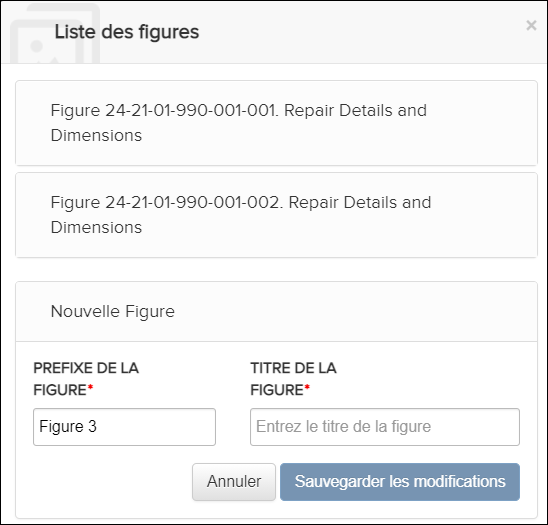
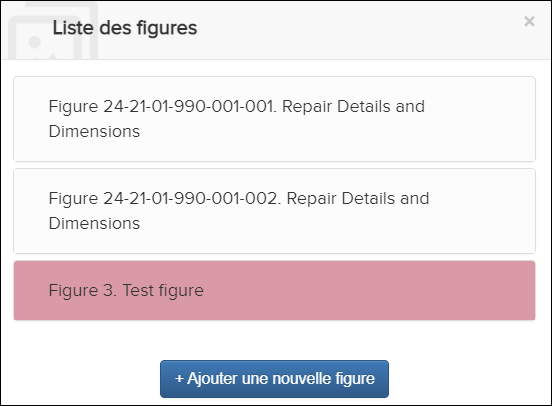
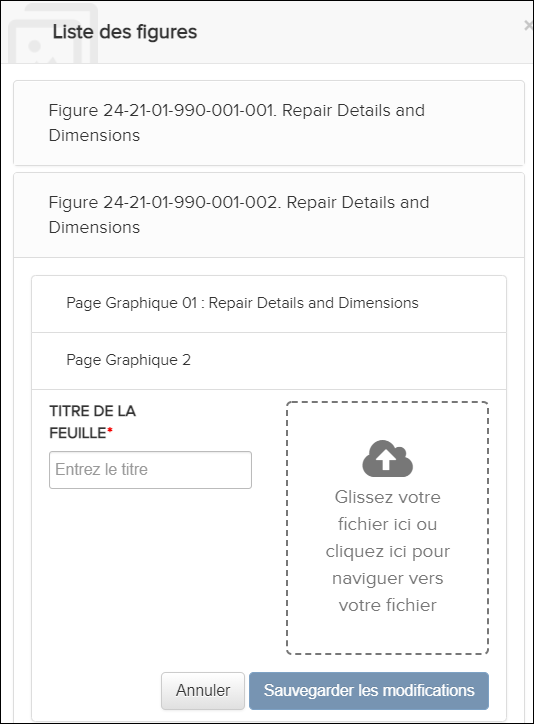
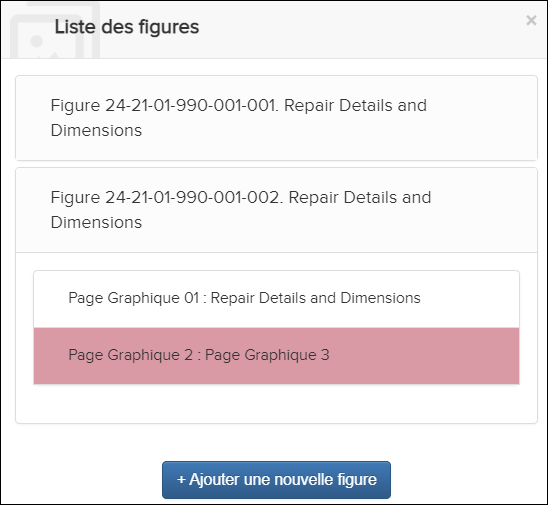

Non applicable pour Pinpoint Standalone Light.
Les utilisateurs disposant des autorisations Peut créer du contenu peuvent ajouter de nouvelles figures et feuilles qui peuvent être sélectionnées lors de la création de contenu. L'ajout de figures ou de feuilles est disponible dans la boîte de dialogue Liste des figures.
Pour ouvrir la boîte de dialogue Liste des figures procédez comme suit:
- Entrez en mode création. Faire référence à Entrer en mode de création.
- Dans l'en-tête Contenu, sélectionnez l'icône
 Liste des figures.The Liste des figures une boîte de dialogue apparaît. Par example:
Liste des figures.The Liste des figures une boîte de dialogue apparaît. Par example:
Liste des figures Dialogue
Ajouter une figure
- Dans la boîte de dialogue Liste des figures, cliquez
sur le bouton .La boîte de dialogue Liste des figures s'agrandit pour vous permettre d'ajouter une figure. Par example:

Liste des figures Dialogue - Ajouter une figure
- Optionnel. Modifiez la valeur PREFIXE DE LA FIGURE.
- Dans le champ TITRE DE LA FIGURE, entrez le titre de la figure.
- Cliquez sur le bouton .La figure est ajoutée à la Liste des figures et mise en surbrillance. Par example:

Liste des figures Dialogue - Figurée ajoutée
Ajouter une feuille Insérer un lien vers un graphique dans la barre d'édition en
mode création. Faire référence à Insérer une image.
Insérer un lien vers un graphique dans la barre d'édition en
mode création. Faire référence à Insérer une image.
- Dans la boîte de dialogue Liste des figures, passez
la souris sur le nom de la figure à laquelle vous souhaitez ajouter une
feuille. Ces options apparaissent:

- Cliquez sur l'icône
Ajouter une page graphique. La boîte de
dialogueList des figures s'agrandit. Par
example:

Liste des figures Dialogue - Ajouter une page graphique
- Dans le champ TITRE DE LA FEUILLE, saisissez le titre de la feuille.
- Cliquez dans la zone graphique et sélectionnez un fichier à ajouter, ou faites glisser votre fichier dans la zone.
- Cliquez sur le bouton .La feuille est ajoutée à la Liste des figures et mise en surbrillance. Par example:

Liste des figures Dialogue - Feuille ajoutée
Remarque : L'ajout d'une nouvelle feuille et le téléchargement d'une nouvelle image généreront la vignette et l'afficheront dans le Localisez le volet de contenu.